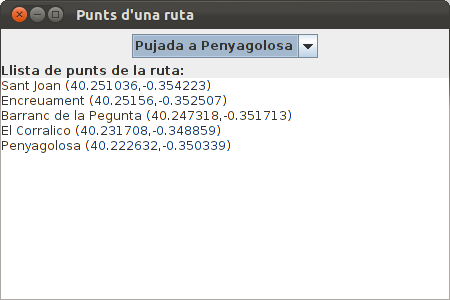
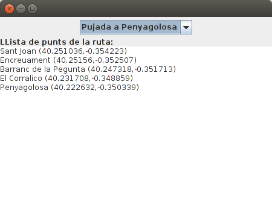
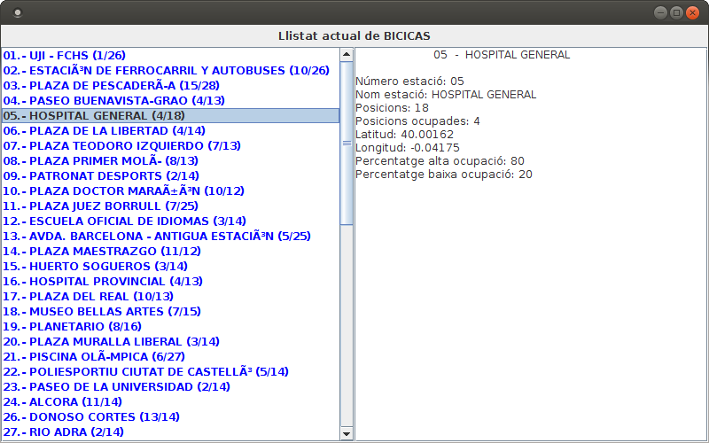

Exercicis
Exercici 3_1
En el projecte anomenat Tema3, crea't un paquet anomenat exercicis on col·locarem tot el relatiu als exercicis d'aquest tema. Copia't dins del projecte el fitxer Rutes.dat que us passarà el professor. En ell tenim dades prèviament guardades que seran unes rutes consistents en una sèrie de punts amb una descripció. Cada punt seran unes coordenades (com en un mapa).
L'estructura de les dades guardades és la següent
- nom de la ruta (string)
- desnivell (int)
- desnivell acumulat (int)
- número de punts (int)
- Per cada punt:
- nom (string)
- latitud (double)
- longitud (double)
Observa que la quarta dada és un enter amb el número de punts de la ruta.
Fes un programa (amb fun main()) en el fitxer Kotlin Ex3_1_LlegirRutesSerial.kt que agafe les dades del fitxer (hi ha 2 rutes, però ho heu de fer genèric per a un número indeterminat de rutes) i les traga per pantalla amb aquest aspecte:
Ruta: Pujada a Penyagolosa
Desnivell: 530
Desnivell acumulat: 530
Té 5 punts
Punt 1: Sant Joan (40.251036,-0.354223)
Punt 2: Encreuament (40.25156,-0.352507)
Punt 3: Barranc de la Pegunta (40.247318,-0.351713)
Punt 4: El Corralico (40.231708,-0.348859)
Punt 5: Penyagolosa (40.222632,-0.350339)
Ruta: La Magdalena
Desnivell: 51
Desnivell acumulat: 84
Té 7 punts
Punt 1: Primer Molí (39.99385,-0.032941)
Punt 2: Segon Molí (39.99628,-0.029427)
Punt 3: Caminàs (40.00513,-0.022569)
Punt 4: Riu Sec (40.006765,-0.02237)
Punt 5: Sant Roc (40.017906,-0.02289)
Punt 6: Explanada (40.034048,-0.00633)
Punt 7: La Magdalena (40.034519,-0.005856)
Exercici 3_2
Coordenades, que derivarà de Serializable (i que és convenient posar-li el número de versió per defecte: private const val serialVersionUID: Long = 1). Podeu consultar la classe Ruta que us passe per veure la manera de derivar de Serializable i posar-li número de sèrie.
Contindrà:
- latitud (double)
- longitud (double)
PuntGeo, que derivarà de Serializable (i que és convenient posar-li el número de versió per defecte: private const val serialVersionUID: Long = 1). Podeu consultar la classe Ruta que us passe per veure la manera de derivar de Serializable i posar-li número de sèrie.
Contindrà:
- nom (String)
- coord (Coordenades)
Ruta . Aquesta classe us la passarà el professor.
També implementa Serializable i conté:
- nom (String)
- desnivell (int)
- desnivellAcumulat (int)
- llistaDePunts: un ArrayList de PuntGeo
Observa com per a més comoditat té els mètodes:
- addPunt(PuntGeo), que afegirà un nou PuntGeo a la llista
- getPunt(int), al qual se li passa l'índex del punt que es vol i torna tot aquest punt
- getPuntNom(int), al qual se li passa l'índex del punt que es vol i tornarà el seu nom
- getPuntLatitud(int), al qual se li passa l'índex del punt que es vol i tornarà la seua latitud
- getPuntLongitud(int), al qual se li passa l'índex del punt que es vol i tornarà la seua longitud
- size(), que ens dóna el número de punts guardats en la llista.
L'únic que has de fer en aquesta classe és:
- Fes un mètode nou en la classe Ruta anomenat mostraRuta(), que mostre el contingut de la ruta amb aquest aspecte:
Ruta: Pujada a Penyagolosa
Desnivell: 530
Desnivell Acumulat: 530
Té 5 punts
Punt 1: Sant Joan (40.251036,-0.354223)
Punt 2: Encreuament (40.25156,-0.352507)
Punt 3: Barranc de la Pegunta (40.247318,-0.351713)
Punt 4: El Corralico (40.231708,-0.348859)
Punt 5: Penyagolosa (40.222632,-0.350339)
En un fitxer Kotlin anomenat Ex3_2_PassarRutesSerialObj.kt , fes el programa que passe del fitxe Rutes.dat al fitxer Rutes.obj. És a dir, has d'anar agafant la informació del fitxer Rutes.dat , guardar la informació en un objecte Ruta, visualitzar la seua informació amb mostraRuta() i per últim guardar la informació de l'objecte en un fitxer anomenat Rutes.obj. I això fins el final de fitxer (hi ha 2 rutes)
En un fitxer Kotlin anomenat Ex3_2_LlegirRutesObj.kt, llig les rutes guardades en el fitxer Rutes.obj i mostra-les per pantalla utilitzant el mètode mostraRuta()
Exercici 3_3
Fes un programa en el fitxer Ex3_3_PassarRutesObjXML.kt (amb main) que passe el fitxer Rutes.obj a un fitxer XML anomenat Rutes.xml amb aquest aspecte. Els punts suspensius indiquen que hi ha més d'un punt en cada ruta, i que hi ha més d'una ruta
Exercici 3_4
Fer una aplicació gràfica que llegirà el fitxer Rutes.xml per a que apareguen els noms de les rutes en un JComboBox. Quan se seleccione una, ha d'aparèixer la llista de punts (nom, latitud i longitud) en un JTextArea. L'aspecte podria ser el següent:

Hi ha dos mètodes per a saber quin és l'element seleccionat del JComboBox:
- getSelectedItem() torna un String amb l'element seleccionat
- getSelectedIndex() torna un enter amb el número d'ordre de l'element seleccionat (0 per al primer; 1 per al segon; ...)
Observeu com en aquest cas ens convé getSelectedIndex(), ja que el número d'ordre de l'element seleccionat serà el mateix que el número d'ordre de la ruta que busquem en el NodeList doc.getElementsByTagName("ruta")
L'esquelet del programa seria aquest. Copieu-lo en un fitxer Kotlin anomenat Ex3_4_VisRutesXML.kt :
import javax.swing.*
import java.awt.*
import org.w3c.dom.Document
import org.w3c.dom.Element
import javax.xml.parsers.DocumentBuilderFactory
class Finestra : JFrame() {
init {
var doc: Document
// sentències per a omplir doc
defaultCloseOperation = JFrame.EXIT_ON_CLOSE
setTitle("Punts d'una ruta")
setSize(400, 300)
setLayout(BorderLayout())
val panell1 = JPanel(FlowLayout())
val panell2 = JPanel(BorderLayout())
add(panell1,BorderLayout.NORTH)
add(panell2,BorderLayout.CENTER)
val llistaRutes = arrayListOf<String>()
// sentències per a omplir l'ArrayList anterior amb el nom de les rutes
val combo = JComboBox(llistaRutes.toArray())
panell1.add(combo)
panell2.add(JLabel("Llista de punts de la ruta:"),BorderLayout.NORTH)
val area = JTextArea()
panell2.add(area)
combo.addActionListener{
// accions quan s'ha seleccionat un element del combobox,
// i que han de consistir en omplir el JTextArea
}
}
}
fun main(args: Array<String>) {
EventQueue.invokeLater {
Finestra().isVisible = true
}
}
Exercici 3_5
Fer un programa en el fitxer Kotlin Ex3_5_PassarRutesObjJSON.kt que passe el fitxer Rutes.obj a un fitxer JSON Rutes.json amb aquest aspecte:
{
"rutes": [
{
"nom": "Pujada a Penyagolosa",
"desnivell": 530,
"desnivellAcumulat": 530,
"llistaDePunts": [
{
"nom": "Sant Joan",
"coord": {
"latitud": 40.251036,
"longitud": -0.354223
}
},
...
]
},
...
]
}
Com que ja tenim creades les classes Ruta, PuntGeo i Coord, el més còmode serà utilitzar Moshi. Tan sols ens farà falta una classe que ho englobe tot:
class Rutes(var rutes: MutableList<Ruta> = mutableListOf<Ruta>())Exercici 3_6
Replicar l'exercici 3_4, però ara llegint del fitxer Rutes.json, en compte de Rutes.xml
Fer una aplicació gràfica que llegirà el fitxer Rutes.json i que aparega el nom de les rutes en un JComboBox. Quan se seleccione una, ha d'aparèixer la llista de punts (nom, latitud i longitud) en un JTextArea. L'aspecte podria ser el següent:

Hi ha dos mètodes per a saber quin és l'element seleccionat del JComboBox:
- getSelectedItem() torna un String amb l'element seleccionat
- getSelectedIndex() torna un enter amb el número d'ordre de l'element seleccionat (0 per al primer; 1 per al segon; ...)
Observeu com en aquest cas, igual que en l'exercici 3_4, ens convé getSelectedIndex().
I com que ja tenim definides les classes, ens convé utilitzar Moshi.
Aquest seria l'esquelet del programa. Copieu el següent codi en un fitxer Kotlin anomenat Ex3_6_VisRutaJSON.kt:
import javax.swing.*
import java.awt.*
import com.squareup.moshi.Moshi
import java.io.File
class FinestraJSON : JFrame() {
init {
var llistaRutes: ArrayList<Ruta>
// sentències per a omplir llistaRutes
defaultCloseOperation = JFrame.EXIT_ON_CLOSE
setTitle("JSON: Punts d'una ruta")
setSize(400, 300)
setLayout(BorderLayout())
val panell1 = JPanel(FlowLayout())
val panell2 = JPanel(BorderLayout())
add(panell1, BorderLayout.NORTH)
add(panell2, BorderLayout.CENTER)
var nomsLlistaRutes = arrayListOf<String>()
// sentències per a omplir l'ArrayList anterior amb el nom de les rutes
val combo = JComboBox(nomsLlistaRutes.toArray())
panell1.add(combo)
panell2.add(JLabel("Llista de punts de la ruta:"), BorderLayout.NORTH)
val area = JTextArea()
panell2.add(area)
combo.addActionListener {
// accions quan s'ha seleccionat un element del combobox,
// i que han de consistir en omplir el JTextArea
}
}
}
fun main(args: Array<String>) {
EventQueue.invokeLater {
FinestraJSON().isVisible = true
}
}Exercici 3_7 (voluntari)
Per a practicar un poquet més, anem a fer un altre exercici per a construir un fitxer JSON però ara amb la llibreria org.json
Feu un programa en el fitxer Kotlin anomenat Ex3_7_PassarCotxesXMLJSON.kt, que haurà de passar el fitxer cotxes.xml al fitxer cotxes.json. No tenim creades les classes dels cotxes, i per això utilitzarem la llibreria org.json.
Aquest és el fitxer cotxes.xml:
<oferta>
<vehiculo>
<marca>ford</marca>
<modelo color="gris">focus</modelo>
<motor combustible="gasolina">duratorc 1.4</motor>
<matricula>1234AAA</matricula>
<kilometros>12500</kilometros>
<precio_inicial>12000</precio_inicial>
<precio_oferta>10000</precio_oferta>
<extra valor="250">pintura metalizada</extra>
<extra valor="300">llantas</extra>
<foto>11325.jpg</foto>
<foto>11326.jpg</foto>
</vehiculo>
<vehiculo>
<marca>ford</marca>
<modelo color="gris">focus</modelo>
<motor combustible="diesel">duratorc 2.0</motor>
<matricula>1235AAA</matricula>
<kilometros>125000</kilometros>
<precio_inicial>10000</precio_inicial>
<precio_oferta>9000</precio_oferta>
<extra valor="250">pintura metalizada</extra>
<extra valor="200">spoiler trasero</extra>
<extra valor="500">climatizador</extra>
<foto>11327.jpg</foto>
<foto>11328.jpg</foto>
</vehiculo>
</oferta>
I aquest ha de ser l'aspecte de cotxes.json:
{
"oferta": {
"vehiculos": [
{
"marca": "ford",
"modelo": {
"color": "gris",
"nombre_modelo": "focus"
},
"motor": {
"combustible": "gasolina",
"nombre_motor": "duratorc 1.4"
},
"matricula": "1234AAA",
"kilometros": "12500",
"precio_inicial": "12000",
"precio_oferta": "10000",
"extra": [
{
"valor": "250",
"nombre_extra": "pintura metalizada"
},
{
"valor": "300",
"nombre_extra": "llantas"
}
],
"foto": [
"11325.jpg",
"11326.jpg"
]
},
{
"marca": "ford",
"modelo": {
"color": "gris",
"nombre_modelo": "focus"
},
"motor": {
"combustible": "diesel",
"nombre_motor": "duratorc 2.0"
},
"matricula": "1235AAA",
"kilometros": "125000",
"precio_inicial": "10000",
"precio_oferta": "9000",
"extra": [
{
"valor": "250",
"nombre_extra": "pintura metalizada"
},
{
"valor": "200",
"nombre_extra": "spoiler trasero"
},
{
"valor": "500",
"nombre_extra": "climatizador"
}
],
"foto": [
"11327.jpg",
"11328.jpg"
]
}
]
}
}
Exercici 3.8 (voluntari)
Visualitzar en un programa gràfic l'estat actual de Bicicas, agafant-lo directament de la pàgina http://gestiona.bicicas.es/apps/apps.php.
- En el mètode agafarBicicas() farem les instruccions per agafar-lo directament d'Internet, utilitzant un URL, en el qual:
- Inicialitzarem amb la pàgina que busquem
- Obrirem la connexió amb el mètode openConnection()
- Després obtindrem el contingut amb el mètode getInputStream(), que com el seu nom indica serà un InputStream
- En el mètode mostrarEstacions() introduirem les instruccions per a visualitzar les estacions, utilitzant un JList (el que està a la part de l'esquerra), que s'ha de construir a partir d'un DefaultListModel. Per anar col·locant els diferents elements del JList, els haurem d'anar afegint al DefaultListModel, i aniran apareixent en el JList. Intentarem mostrar el número d'estació, nom i número de bicicletes (posicions ocupades) i el total de posicions.
- El mètode visualitzaEstacio() s'activa quan seleccionem un element del JList, i en ell mostrarem les propietats de l'estació seleccionada en el TextArea que està a la part de la dreta.
Aquest seria l'aspecte:

Aquest és l'esquelet. Copieu-lo en un fitxer Kotlin anomenat Ex3_8_VisBicicasJSONList.kt :
import javax.swing.*
import java.awt.*
import org.json.JSONTokener
import org.json.JSONObject
import org.json.JSONArray
import java.net.URL
import java.io.InputStreamReader
class FinestraBicicas : JFrame() {
var estacions = JSONArray()
var listModel = DefaultListModel<String>()
var list = JList(listModel)
var area = JTextArea(5, 15)
init {
defaultCloseOperation = JFrame.EXIT_ON_CLOSE
setTitle("JSON: Vista detallada BICICAS")
setSize(800, 800)
setLayout(BorderLayout())
val panell1 = JPanel(FlowLayout())
val panell2 = JPanel(GridLayout(1, 2))
add(panell1, BorderLayout.NORTH)
add(panell2, BorderLayout.CENTER)
list.setForeground(Color.blue)
var scroll1 = JScrollPane(list)
var scroll2 = JScrollPane(area)
panell2.add(scroll1)
panell2.add(scroll2)
panell1.add(JLabel("LListat actual BICICAS"))
agafarBicicas()
mostrarEstacions()
list.addListSelectionListener() {
if (list.getSelectedIndex() >= 0)
visualitzaEstacio(list.getSelectedIndex())
}
}
fun agafarBicicas() {
// Instruccions per a llegir de la pàgina de Bicicas i col·locar en arrel
val bicicas = URL("http://gestiona.bicicas.es/apps/apps.php");
val arrel = (JSONTokener(bicicas.openConnection().getInputStream()).nextValue() as JSONArray).get(0) as JSONObject
// Instruccions per a col·locar les estacions en estacions (JsonArray)
}
fun mostrarEstacions() {
// Instruccions per a introduir en el JList les estacions
// La manera d'anar introduint informació en el JList és a través del DefaultListModel:
// listModel.addElement("Linia que es vol introduir ")
}
fun visualitzaEstacio(numEst: Int) {
// Instruccions per a mostrar les característiques en el area, el JTextArea de la dreta anomenat area
}
}
fun main(args: Array<String>) {
EventQueue.invokeLater {
FinestraBicicas().isVisible = true
}
}
Llicenciat sota la Llicència Creative Commons Reconeixement NoComercial CompartirIgual 2.5